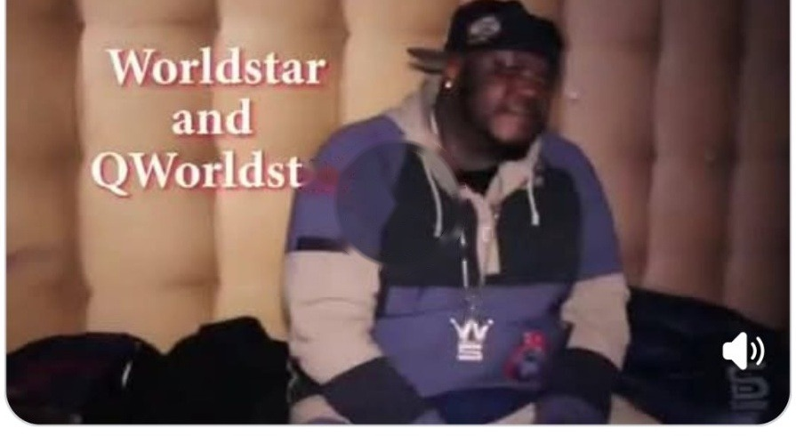
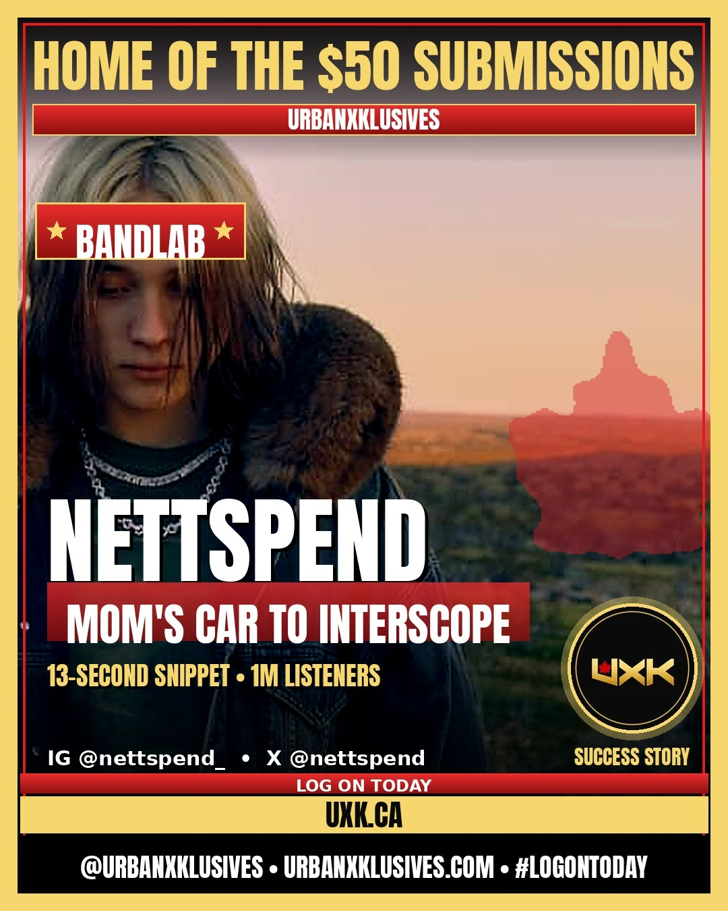
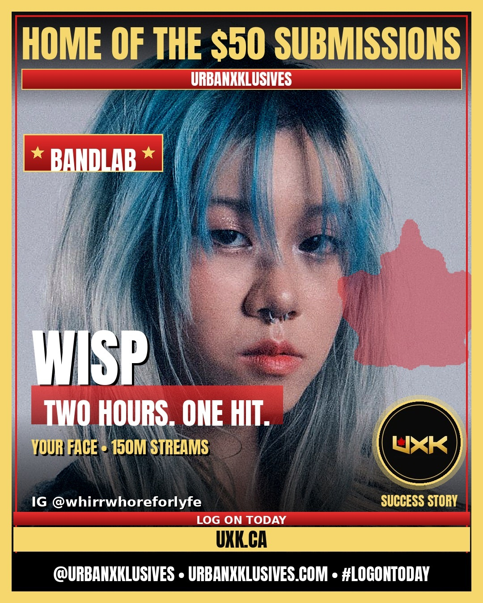
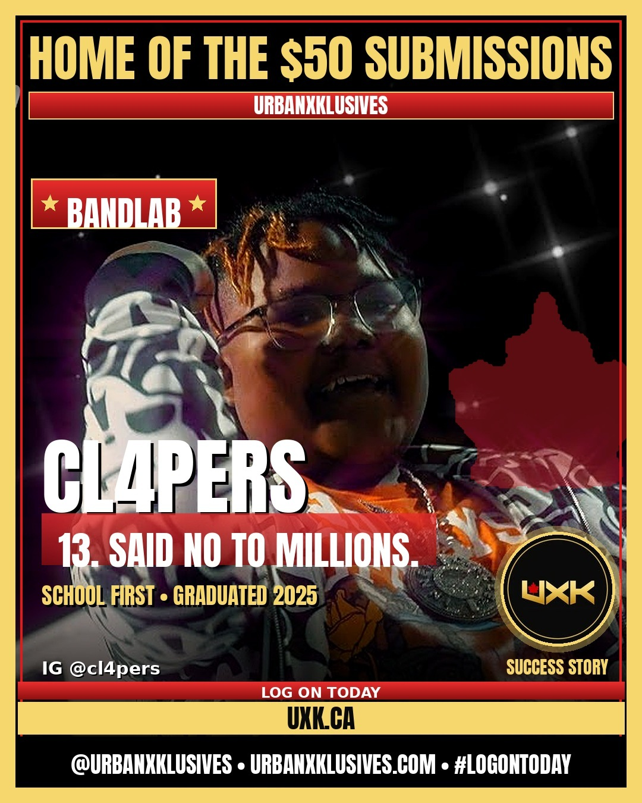
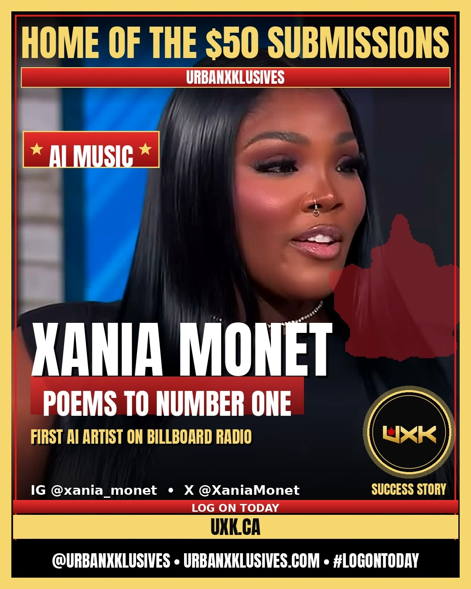
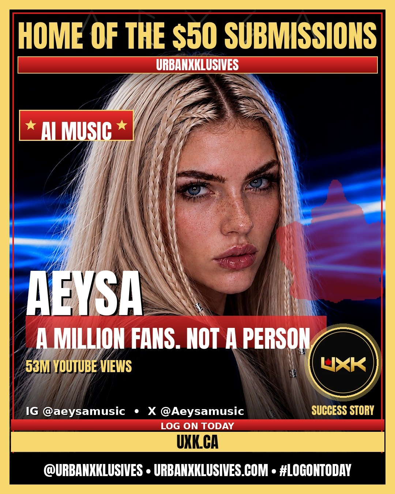
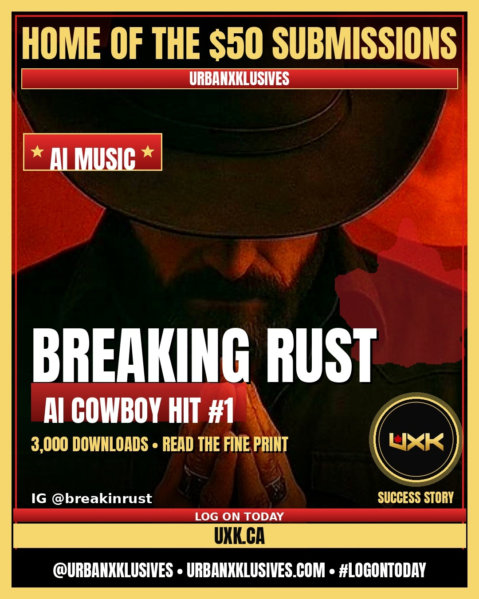

XKLUSIVE
THE UXK HEADLINER
The artist Trav has backed since 2015 — eleven years deep. St. Ann, Jamaica's own Broomy Boss: "Bad Youth" is the latest video, "Doom" with Popcaan is the biggest link-up of his career. Press play. This is the main entry.
NEW: BAD YOUTH · DOOM FT. POPCAAN · BAD DJ EP

$49 Limited Submission Drop

Worldstar & Q Live in Toronto

Believe In Us
UXK LIVE
CHECKING LIVE STATUS…CATCH ME LIVE
This is the main place you'll see me live online — streaming on Kick and on TikTok Live. Pull up, tap in, be part of the KONNECT in real time.
Search UrbanXklusives

HE MADE BEATS IN HIS MOM'S CAR AND AT THE LAUNDROMAT
NOV 12, 2026 · BY TRAV MANE
Nettspend started on BandLab at 12. A 13-second snippet changed everything.
KEY POINTS
WHERE THEY WERE: Twelve years old in Richmond, Virginia, making songs in his mom's car and at the laundromat.
THE VISION: Build his own sound with kids online, far from the industry's eyes.
HOW THEY PERSEVERED: Five years of making songs before anyone was watching — one song at a time, on a phone.
THE PROOF: About a million monthly Spotify listeners before he had an album out.
Gunner Shepardson was 12 years old in Richmond, Virginia, when he started making music on BandLab. No studio. No industry family. He made beats and verses in his mom's car, at the laundromat, between classes.
He put his songs on SoundCloud and Discord, and he found his people there. Small scenes. Rage beats. Plugg. Kids building a sound together online, far from the industry's eyes.
Then, late in 2023, he posted a snippet on X. Thirteen seconds. Not even a full song. It took off. Before he had an album out, before he spent a dollar on promotion, he had about a million monthly listeners on Spotify.
Interscope signed him in 2024. His debut mixtape, BAD ASS F*CKING KID, came out that December. His debut album, early life crisis, dropped in March 2026 and went to number 39 on the Billboard 200, with YoungBoy Never Broke Again on it.
He was 16 when it broke. He is 19 now.
He is still building. New music, new stages, and the same phone-first way of working that got him here. The deal did not change the method. It just gave the method a bigger stage.
The lesson is not the snippet. The lesson is the years before it. Five years of making songs in cars and laundromats before anyone was watching. The snippet was just the moment the world caught up.
Nettspend did not wait for permission. He did not wait for a studio. He built it on a phone, one song at a time, until the work was too loud to ignore.
The lesson: Start where you are. The phone in your pocket is a studio. The years nobody sees are the years that make you.
Tell Your Story: Got a story like this? A $50 submission puts your story on UrbanXklusives — the blog, the Short, the blast. UXK.CA. Log on today. UrbanXklusives — home of the $50 submissions.
📖 SUCCESS STORIES · STORY 2 OF 14 · BANDLAB · TELL YOUR STORY — $50 · #URXKLUSIVEKONNECT

SHE SANG INTO HER EARBUDS. TWO HOURS LATER, SHE HAD A HIT.
NOV 12, 2026 · BY TRAV MANE
Wisp recorded "Your face" on BandLab in her college bedroom. Interscope signed her before her second song.
KEY POINTS
WHERE THEY WERE: Eighteen, studying computer science at San Francisco State, singing into Apple earbuds in her college bedroom.
THE VISION: No plan at all — she made the song for herself.
HOW THEY PERSEVERED: No team, no budget — she posted the snippet and kept going until she was touring the world.
THE PROOF: "Your face" has more than 150 million streams on Spotify.
Natalie Lu was 18, studying computer science at San Francisco State University, when a friend sent her a beat. It was a gloomy shoegaze instrumental by a producer called grayskies, found on YouTube.
She spent two hours recording herself singing over it into her phone, using her everyday Apple earbuds as a microphone. No guitars. No studio. No plan. The next day she called it "Your face" and put a snippet on TikTok.
It got 100,000 views overnight. Then 600,000. Then a million. Before she had even released a second song, she had signed a deal with Interscope Records. For a shoegaze artist, that almost never happens.
"Your face" went to number 10 on the Billboard Hot Hard Rock Songs chart. It has more than 150 million streams on Spotify. Her debut EP, Pandora, came out in April 2024. Her debut album, If Not Winter, arrived in August 2025.
Since then she has played Coachella, Lollapalooza, and All Points East. She has opened for Deftones and System Of A Down on stadium stages. The kid who started as a shy fan of the genre now stands on the same stages as the bands she grew up on.
Within a year of that first TikTok, she was touring the world.
She did not have a team. She did not have a budget. She had a phone, a free app, and a song she made for herself.
That is what this lane is about. You do not need permission to start. You need to start.
The lesson: One song, made honestly, can change your whole life. Make it for yourself first. The world finds the real ones.
Tell Your Story: Got a story like this? A $50 submission puts your story on UrbanXklusives — the blog, the Short, the blast. UXK.CA. Log on today. UrbanXklusives — home of the $50 submissions.
📖 SUCCESS STORIES · STORY 3 OF 14 · BANDLAB · TELL YOUR STORY — $50 · #URXKLUSIVEKONNECT
HIS FRIENDS TOLD HIM TO TRY BANDLAB. SIX MONTHS LATER, ATLANTIC CALLED.
NOV 12, 2026 · BY TRAV MANE
Luh Tyler made "Back Flippin'" on his phone at 16. He signed with Atlantic Records before the year was out.
KEY POINTS
WHERE THEY WERE: Sixteen in Tallahassee, Florida, making songs on his phone with friends, just for fun.
THE VISION: He was not planning a career — just making songs with his friends for fun.
HOW THEY PERSEVERED: He kept going after the first song instead of stopping — the fun became the career.
THE PROOF: "Back Flippin'" has more than 43 million streams on Spotify.
Tyler Reed Meeks was 16 in Tallahassee, Florida, when his friends told him to try BandLab. They were making music on the app, just for fun. He tried it. He made a song called "Back Flippin'" and did not think much of it.
He told Rolling Stone later that the song was recorded and made in BandLab, on his phone, over beats he found on YouTube. That is the whole setup. A phone, a free app, and beats off the internet.
The song went viral. So did "Law & Order." By December 2022, within months of starting, he had signed with Atlantic Records.
"Back Flippin'" now has more than 43 million streams on Spotify, and the video has more than 15 million views on YouTube. His debut mixtape, My Vision, came out in 2023 and went to number 2 on Billboard's Heatseekers chart. Pitchfork called him "The Coolest 16-Year-Old Rapper in America." He made the 2023 XXL Freshman list at 17. Billboard put him on its 21 Under 21 list.
He has performed at Rolling Loud. His second mixtape, Destined for Greatness, came out in June 2026, and he took it on a headlining tour.
He did not plan to be a rapper. He was a kid hanging out with his friends, riding his hoverboard, making songs for fun. The difference between him and a thousand other kids doing the same thing is that he kept going.
The lesson: Fun is a fine place to start. The kids around you are your first studio. Keep going, and the fun becomes the career.
Tell Your Story: Got a story like this? A $50 submission puts your story on UrbanXklusives — the blog, the Short, the blast. UXK.CA. Log on today. UrbanXklusives — home of the $50 submissions.
📖 SUCCESS STORIES · STORY 4 OF 14 · BANDLAB · TELL YOUR STORY — $50 · #URXKLUSIVEKONNECT

"BANDLAB HAS BECOME MY SIGNATURE SOUND"
NOV 12, 2026 · BY TRAV MANE
Trxy! makes all his music on his phone. "Realize" hit 66 million streams and the Billboard charts.
KEY POINTS
WHERE THEY WERE: About thirteen, in his room in Martinsville, Virginia, making music on his phone.
THE VISION: Make music on his phone like the BandLab artists he watched blow up.
HOW THEY PERSEVERED: Years finding his sound on BandLab, doing it over and over until it sounded like him.
THE PROOF: "Realize" has 66 million streams.
Trey Odell was about 13 when he started watching BandLab artists blow up by making music on their phones. He decided to do the same. He is 19 now, from Martinsville, Virginia, and he still makes all his music on his phone with BandLab.
His own words: "That's how I make all my music — on my phone." And: "BandLab has become my signature sound that I just cannot get out of big studios."
His breakout song is "Realize," from his Eternal EP. It went viral on TikTok. It has 66 million streams. It hit the Top 25 on the Billboard Hot Hard Rock Songs chart.
His debut album, Drowning In Bliss, came out in February 2026 through UnitedMasters. Fourteen tracks. Grammy winner Lawrence Rothman mixed and produced it with Joe Kennedy. And much of it was still created on Trxy!'s phone using BandLab.
The music is heavy. Shoegaze and nu-metal, hazy guitars and hard edges, songs about depression, numbness, and getting through it. That honesty is the whole point. He turned pain into sound, on a phone, in his room, and hundreds of thousands of people a month listen to it.
It took him years to find his sound. BandLab is limitless, and that is the challenge — you have to know what you are doing, and that only comes from doing it, over and over.
He did not wait for a studio to take him seriously. He made the studio fit in his pocket.
The lesson: Your sound is yours. The tool does not matter as much as the years you put into it. Keep making it until it sounds like you.
Tell Your Story: Got a story like this? A $50 submission puts your story on UrbanXklusives — the blog, the Short, the blast. UXK.CA. Log on today. UrbanXklusives — home of the $50 submissions.
📖 SUCCESS STORIES · STORY 5 OF 14 · BANDLAB · TELL YOUR STORY — $50 · #URXKLUSIVEKONNECT

A THRIFTED MIC, A BORROWED LAPTOP, AND 88RISING
NOV 12, 2026 · BY TRAV MANE
LCN! started on BandLab in his Seattle bedroom. Sixteen months later, he signed with 88rising.
KEY POINTS
WHERE THEY WERE: Twenty, a student at the University of Washington, in his bedroom at his parents' house with a thrifted mic.
THE VISION: Sign with a label he used to dream about with his sister back in high school.
HOW THEY PERSEVERED: Learned to produce from YouTube tutorials, squeezing music in between homework and a long bus ride.
THE PROOF: Signed with 88rising sixteen months after his first upload.
Elsian Atienza was 20, a student at the University of Washington, when he uploaded his first song to TikTok in March 2023. He started with a thrifted microphone and the BandLab app on his phone.
He learned to produce by watching YouTube tutorials. He still makes his music in his bedroom at his parents' house, on his brother's borrowed laptop, recording on a dented microphone. He edits in Logic Pro now, but the start was BandLab, and the room never changed.
Sixteen months after that first upload, he signed with 88rising. He sold out his first headline show in Seattle. He has opened for artists he used to listen to growing up. He has played Capitol Hill Block Party and Seattle Pride, and toured across North America.
His top song, "PLEASE WAIT FOR ME," has 1.4 million streams. He has about 50,000 monthly listeners on Spotify. Those numbers are smaller than the others in this series, and that is exactly why his story is here.
Not every breakthrough is a Billboard chart. Sometimes the breakthrough is a kid from Seattle, still in school, still in his bedroom, signing with a label he used to dream about with his sister back in high school. His brother shoots his photos. His sister manages him. His friend produces with him.
The whole thing is family. The whole thing started on a phone.
He is still a full-time student, studying digital communications, squeezing music in between homework and a long bus ride. The grind never stopped.
The lesson: You do not need big numbers to have a real story. A bedroom, a borrowed laptop, and people who believe in you — that is enough to start.
Tell Your Story: Got a story like this? A $50 submission puts your story on UrbanXklusives — the blog, the Short, the blast. UXK.CA. Log on today. UrbanXklusives — home of the $50 submissions.
📖 SUCCESS STORIES · STORY 6 OF 14 · BANDLAB · TELL YOUR STORY — $50 · #URXKLUSIVEKONNECT

SHE WAS A TEACHER. THEN BANDLAB CHANGED HER LIFE.
NOV 12, 2026 · BY TRAV MANE
NESYA taught herself to record on BandLab. Her song "Delulu" hit 40 million streams, and she quit teaching to do music full time.
KEY POINTS
WHERE THEY WERE: A third-grade teacher, depressed, drowning in student loan debt.
THE VISION: "Somehow I'm gonna find a way to make money off of music."
HOW THEY PERSEVERED: Posted five times a day on five accounts while still teaching, aiming for 60 songs in a year.
THE PROOF: "Delulu" has been streamed 40 million times on Spotify.
NESYA was a primary school teacher. A third-grade teacher, depressed, drowning in student loan debt. Music was what got her out of that situation — her words.
She bought a super-cheap microphone, hooked it up to her computer, and started. She did not know how to record or mix vocals. So she used BandLab, and found it all easy. Once she had the process down, she said, it was like, "OK, I'm gonna make 60 songs in a year now because it's all just coming out of me."
While she was still teaching, she was posting five times a day on five different accounts. "Somehow I'm gonna find a way to make money off of music." Within a year of starting, she had about 100,000 monthly listeners across all platforms.
Then her song "Delulu" went viral in 2024. It has been streamed 40 million times on Spotify alone. That gave her the confidence and the financial grounding to quit teaching and become a full-time musician.
She has dropped a new album every Halloween Friday for three years running. Her latest, K!LL NESYA, came out through a Los Angeles label called Double Down. She was picked for BandLab and NME's Get Featured initiative, putting her in front of NME's global audience.
Her music is dark alt-pop, theatrical and strange, built for Halloween and built to last. She calls herself an exorcist musician. The classroom never stood a chance against that.
She was not a kid with a viral moment. She was a grown woman with a job, debt, and a dream she refused to put down. The app was free. The mic was cheap. The work was hers.
The lesson: It is never too late, and you are never too far behind. A free app and a cheap mic got a teacher out of debt and into music full time.
Tell Your Story: Got a story like this? A $50 submission puts your story on UrbanXklusives — the blog, the Short, the blast. UXK.CA. Log on today. UrbanXklusives — home of the $50 submissions.
📖 SUCCESS STORIES · STORY 7 OF 14 · BANDLAB · TELL YOUR STORY — $50 · #URXKLUSIVEKONNECT

HE WAS 13. THE LABELS OFFERED MILLIONS. HE SAID NO.
NOV 12, 2026 · BY TRAV MANE
Cl4pers recorded "Want Me" on BandLab at 13. He turned the labels down, stayed in school, and graduated.
KEY POINTS
WHERE THEY WERE: Thirteen years old in Texas, recording on his phone with BandLab.
THE VISION: His own timeline — school, basketball, and music on his own terms.
HOW THEY PERSEVERED: Turned down millions from the labels, stayed in school, and graduated in May 2025.
THE PROOF: Atlantic and Republic reportedly offered him millions at 13 — he said no.
Cl4pers was 13 years old in Texas when he recorded a song called "Want Me" on his phone using BandLab. He put it out in July 2021. It went viral on TikTok.
Major labels came calling. Atlantic and Republic reportedly offered him millions. He said no.
He stayed in school. He played basketball. He kept making music on his own terms, at his own pace, and he graduated high school in May 2025. Now he is back making music, with a new flow and his whole future in front of him.
Most stories in this series are about saying yes to the deal. This one is about knowing when to say no.
A 13-year-old kid looked at millions of dollars and chose his education, his childhood, and his own timeline. That takes more courage than signing. The music will wait. The labels will come back. But you only get one shot at being a kid.
His story matters because it shows kids there is more than one way to win. You do not have to take the first deal. You do not have to give up school, or your friends, or your life, to be an artist. You can build it slow, build it right, and still be here when you are ready.
He did not disappear. He did not quit. He went to school, played ball, lived his life, and kept the music close. Now he is back, older, sharper, and still in control of his own story.
The phone is still in his pocket. The app is still free. The story is still being written, and this time he is writing it as a graduate, on his own terms.
The lesson: Success on your own terms beats a fast deal every time. School first. The music will wait. You decide when you are ready.
Tell Your Story: Got a story like this? A $50 submission puts your story on UrbanXklusives — the blog, the Short, the blast. UXK.CA. Log on today. UrbanXklusives — home of the $50 submissions.
📖 SUCCESS STORIES · STORY 8 OF 14 · BANDLAB · TELL YOUR STORY — $50 · #URXKLUSIVEKONNECT

A POET FROM MISSISSIPPI FED HER POEMS INTO AI. THEN SHE HIT NUMBER ONE.
NOV 12, 2026 · BY TRAV MANE
Xania Monet wrote her own words, ran them through Suno, and became the first AI artist on a Billboard radio chart.
KEY POINTS
WHERE THEY WERE: A 31-year-old poet from Olive Branch, Mississippi, writing poems about her father's death.
THE VISION: Turn her own poems into songs — her words, carried by AI.
HOW THEY PERSEVERED: She wrote about 90 percent of the lyrics herself — the grief was real, the machine only gave it a sound.
THE PROOF: No. 1 on Billboard's R&B Digital Song Sales — the first AI artist ever on a Billboard radio chart.
Telisha "Nikki" Jones is 31, a poet from Olive Branch, Mississippi. She wrote a poem about her father's death. Then she fed her poems into Suno, an AI music tool, and turned them into songs.
The song was "How Was I Supposed to Know?" It went viral. It went to number one on Billboard's R&B Digital Song Sales chart. She became the first AI artist ever to appear on a Billboard radio chart — Adult R&B Airplay, debuting at number 30 and peaking at number 24.
By February 2026, her songs had more than 117 million on-demand streams in the US. After a bidding war, she signed a three million dollar deal with Hallwood Media, run by Neil Jacobson, the former Geffen president.
Here is the part that matters: the words were hers. She wrote about 90 percent of the lyrics herself. The AI supplied the voice and the production, not the authorship. The grief was real. The poem was real. The machine just gave it a sound.
Billboard estimated that five of her songs earned about 52,000 dollars in roughly two months. That is real money from real words, written by a poet who had never been in a studio.
She was the first AI artist to break through on radio, not just on a sales chart. Radio means real people hearing it in real cars, on real stations. That is a different kind of proof.
She did not replace herself with AI. She used AI to carry what she had already written. That is the difference, and it is the whole lane.
The lesson: AI is a tool, not a talent. The words have to be yours first. Write something real, and the machine can help you carry it.
Tell Your Story: Got a story like this? A $50 submission puts your story on UrbanXklusives — the blog, the Short, the blast. UXK.CA. Log on today. UrbanXklusives — home of the $50 submissions.
📖 SUCCESS STORIES · STORY 9 OF 14 · AI MUSIC · TELL YOUR STORY — $50 · #URXKLUSIVEKONNECT

SHE TOLD EVERYONE IT WAS AI. THEN SHE HIT NUMBER ONE IN FIVE COUNTRIES.
NOV 12, 2026 · BY TRAV MANE
IngaRose disclosed her Suno use from day one. "Celebrate Me" topped the iTunes chart in the US, UK, France, Canada, and New Zealand.
KEY POINTS
WHERE THEY WERE: A songwriter named Ingrid writing lyrics by hand, building the sound with Suno.
THE VISION: Real words with an AI voice — and honest about it from day one.
HOW THEY PERSEVERED: She told everyone it was AI from day one — in her bio, in her profile, no fake backstory.
THE PROOF: "Celebrate Me" hit No. 1 on iTunes in the US, UK, France, Canada, and New Zealand.
IngaRose is an R&B singer who does not exist. There is no real-life performer behind the voice. A songwriter named Ingrid writes the lyrics by hand, then uses Suno as a creative tool to build the sound.
The difference between IngaRose and the AI acts that got in trouble is simple: she told everyone. Her Spotify bio says it. Her TikTok profile says the song was composed with Suno and the lyrics are written by humans. No secret. No fake backstory.
"Celebrate Me" came out on March 31, 2026. It spread on TikTok — almost 300,000 videos used the song. On April 17, Forbes reported it was number one on the iTunes chart in the United States, the United Kingdom, France, Canada, and New Zealand. Five IngaRose songs were in the US iTunes top 100 at the same time.
The song has more than 28 million plays on Spotify. At her peak, she had about 940,000 monthly listeners.
Now the honest part. iTunes ranks download sales, not listening, and AI acts crowded its top 100 that spring. Some people said the chart could be gamed. Others pointed to the open disclosure and said the song earned it. Both things can be true.
What is not in doubt is the method: a human wrote real words, used AI to give them a voice, and told the truth about it from the start.
The lesson: Honesty is the whole game with AI. Disclose it, write real words, and let the song speak for itself.
Tell Your Story: Got a story like this? A $50 submission puts your story on UrbanXklusives — the blog, the Short, the blast. UXK.CA. Log on today. UrbanXklusives — home of the $50 submissions.
📖 SUCCESS STORIES · STORY 10 OF 14 · AI MUSIC · TELL YOUR STORY — $50 · #URXKLUSIVEKONNECT
TWO FRIENDS IN KOREA, HUMAN WORDS, AND AN AI VOICE
NOV 12, 2026 · BY TRAV MANE
Meomuru wrote their own lyrics and let Suno sing them. Their song climbed to number 2 on Korea's biggest chart.
KEY POINTS
WHERE THEY WERE: Two friends in South Korea, Lee Yong-seok and Choi Seong-hyeok, writing their own lyrics.
THE VISION: Ask the question every young person asks — did I become who I wanted to be?
HOW THEY PERSEVERED: Spread through short videos, one clip and one share at a time — no label push, no radio campaign.
THE PROOF: No. 2 on the Melon Top 100, Korea's biggest chart.
Meomuru is a duo from South Korea — Lee Yong-seok and Choi Seong-hyeok, working under the name Glorywave. They write their own lyrics, human words about growing up and becoming the person you dreamed you would be. Then they use Suno to compose the music and sing the vocals.
Their song is "Have You Become the Adult You Dreamed Of?" It came out on June 2, 2026. It spread through short videos, the same way songs spread everywhere now — one clip, one share, one person at a time.
By October, it had climbed to number 3 on the Melon Top 100, the biggest music chart in Korea. Then it went higher, to number 2. A song with an AI voice, sitting next to the biggest K-pop acts in the country, on the chart that decides what Korea listens to.
The duo is not registered with KOMCA, Korea's music copyright association. That is part of the new territory here — the old systems were not built for this, and the rules are still being written.
But the words are the point. Two friends wrote about a question every young person asks: did I become who I wanted to be? The AI did not write that question. Humans did. The machine just gave it a melody.
The song spread the same way it spreads everywhere — short videos, one share at a time, until a whole country was singing along. No label push. No radio campaign. Just a question everyone recognised.
This is what the lane looks like when it works right. Human heart, AI voice, honest about both.
The lesson: The question in the song is the song. AI can sing it, but only a human can ask it. Write the question first.
Tell Your Story: Got a story like this? A $50 submission puts your story on UrbanXklusives — the blog, the Short, the blast. UXK.CA. Log on today. UrbanXklusives — home of the $50 submissions.
📖 SUCCESS STORIES · STORY 11 OF 14 · AI MUSIC · TELL YOUR STORY — $50 · #URXKLUSIVEKONNECT

SHE HAS A MILLION FOLLOWERS. SHE IS NOT A PERSON.
NOV 12, 2026 · BY TRAV MANE
Aeysa is a virtual artist with human writers behind her. 53 million YouTube views and counting.
KEY POINTS
WHERE THEY WERE: A virtual artist with an Oslo persona — no real person behind the voice, human writers behind the songs.
THE VISION: Human-written songs, AI voice and images, presented honestly as virtual.
HOW THEY PERSEVERED: Seventy-seven videos on YouTube, fans finding her one song at a time, shared person to person.
THE PROOF: 53 million views on YouTube.
Aeysa is a virtual artist with an Oslo persona. She is not a real person. But the people behind her are real — human writers and producers who write the songs, and AI that builds the audio and the images around them.
Her debut album came out on October 5, 2026. By November, she had about 1.1 million followers across platforms. Her YouTube channel had 96,000 subscribers, 53 million views, and 77 videos. On Spotify, she had about 33,000 monthly listeners.
That is a real audience for an artist who has never stood on a stage, never done an interview, never existed outside a screen.
Aeysa sits in the middle of the biggest question in music right now. If the songs are written by humans and the voice is AI, is she an artist? The people listening seem to think so. Fifty-three million views do not lie about what people want to hear.
But there is a line, and it matters. Aeysa's team is open about what she is. She is presented as a virtual artist, not a real singer hiding behind a fake name. That honesty is what separates her from the acts that got caught pretending.
The future is going to have more Aeysas. The question is not whether they exist. It is whether the humans behind them are honest about it, and whether the songs are worth hearing.
Her debut album came with 77 videos on YouTube and a fanbase that found her the same way fans find any artist — one song at a time, shared from person to person. The screen is the stage now.
The lesson: A virtual artist can be real art — if the humans behind it are honest and the songs are worth hearing. The audience decides the rest.
Tell Your Story: Got a story like this? A $50 submission puts your story on UrbanXklusives — the blog, the Short, the blast. UXK.CA. Log on today. UrbanXklusives — home of the $50 submissions.
📖 SUCCESS STORIES · STORY 12 OF 14 · AI MUSIC · TELL YOUR STORY — $50 · #URXKLUSIVEKONNECT

AN AI COWBOY HIT NUMBER ONE ON BILLBOARD. HERE IS WHAT THAT REALLY MEANS.
NOV 12, 2026 · BY TRAV MANE
Breaking Rust's "Walk My Walk" topped a Billboard chart. It took about 3,000 downloads to do it. Read that again.
KEY POINTS
WHERE THEY WERE: An AI-generated country project — no human performers, one man prompting the AI.
THE VISION: An AI cowboy singing country songs built entirely by prompts.
HOW THEY PERSEVERED: Kept releasing until two songs topped Spotify's US Viral 50 at the same time.
THE PROOF: "Walk My Walk" hit No. 1 on Billboard's Country Digital Song Sales — on about 3,000 downloads.
Breaking Rust is an AI-generated country project. No human performers. A person named Aubierre Rivaldo Taylor prompts the AI, and it produces the vocals, the instruments, and the lyrics.
In November 2025, their song "Walk My Walk" hit number one on Billboard's Country Digital Song Sales chart and held it for two weeks. It was the first fully AI-generated song to top a Billboard chart. Two Breaking Rust songs topped Spotify's US Viral 50 at the same time. At their peak, the act had more than two million monthly listeners. Their two biggest songs have more than 28 million streams each on Spotify.
That is the headline. Here is the truth behind it.
The Country Digital Song Sales chart measures paid downloads — a format most listeners abandoned ten years ago. "Walk My Walk" reached number one with about 3,000 units sold. TIME magazine pointed out that the song never showed up on the daily streaming charts, and suggested the number one may have been pushed there for publicity.
So no, it was not the biggest country song in America. But it was a real Billboard number one, on a real Billboard chart, by a singer who does not exist. Both things are true at once.
The act has since carried Spotify's AI Persona badge, and the conversation moved on to the next chart-topper. But the lesson stays: a headline is not the whole story. Read the numbers behind it.
That is why this story is here. Not as hype. As a lesson in reading the numbers. A chart position is only as big as the chart it sits on.
The lesson: Always read past the headline. A number one is real, but ask what it took to get there. The truth is in the fine print.
Tell Your Story: Got a story like this? A $50 submission puts your story on UrbanXklusives — the blog, the Short, the blast. UXK.CA. Log on today. UrbanXklusives — home of the $50 submissions.
📖 SUCCESS STORIES · STORY 13 OF 14 · AI MUSIC · TELL YOUR STORY — $50 · #URXKLUSIVEKONNECT
Get drops, vlogs, and exclusives first. One email when it drops — no spam, ever.
SIMILAR STORIES
- ZAYTOVEN SAID "BEAT DONT FAIL ME NOW" — AND TRAV WAS IN THE ROOMstories
- A THRIFTED MIC, A BORROWED LAPTOP, AND 88RISINGstories
- XKLUSIVE ARTIST VS FEATURED ARTIST — WHAT'S THE DIFFERENCE?promo
- JAY-Z: THE NAS BEEF "WASN'T PERSONAL"history
- XKLUSIVE — FEATURES & COLLABS: THE FULL CATALOGUEmusic
- THE NIGHT THEY TOOK @URBANXKLUSIVESvault